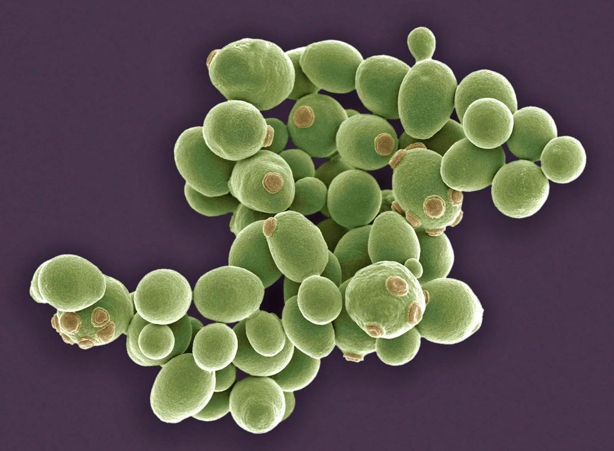
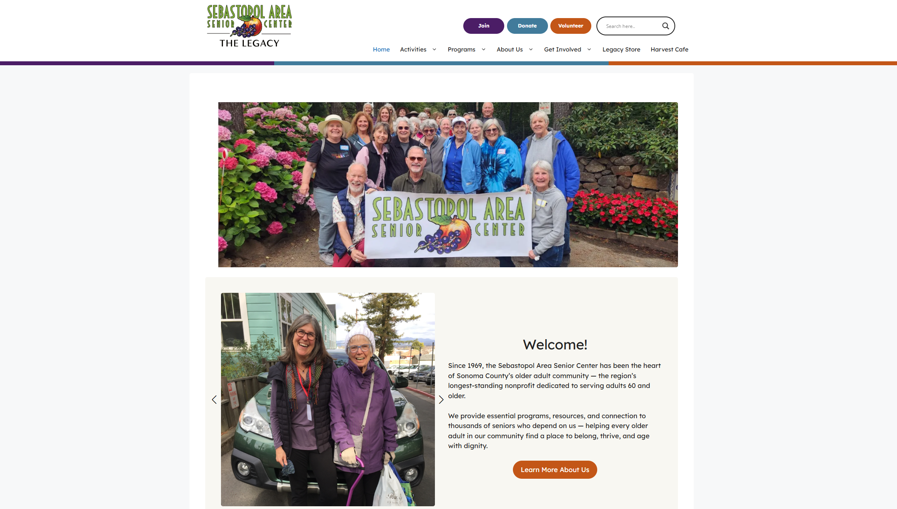
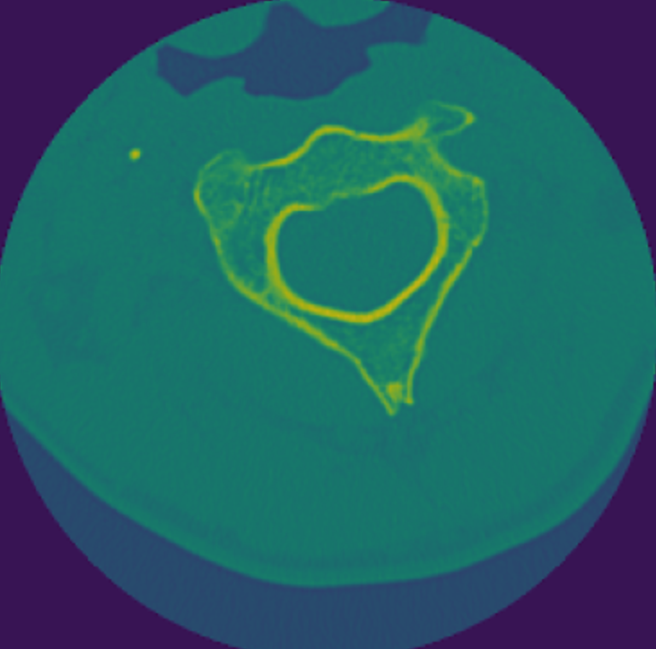
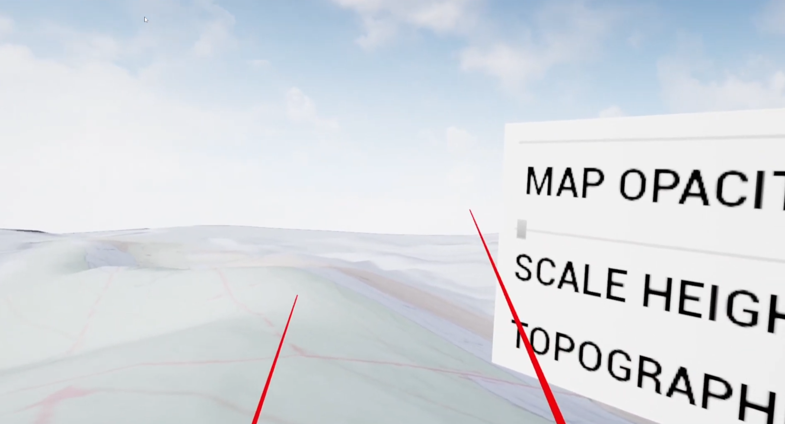
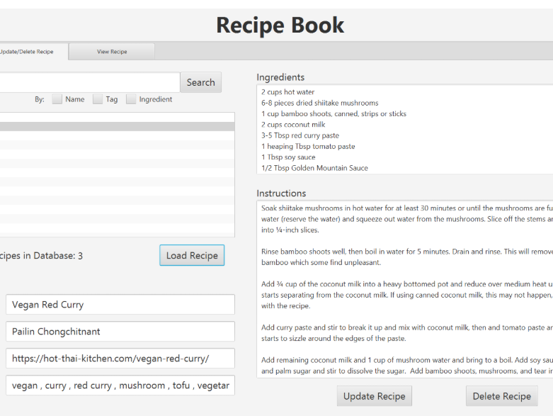

This fall I will be attending SDSU where, I will be completing an M.S. in Computer Science. I am particularly interested in the intersection between Biology and Computer Science. Most of my programming experience is in C++, but I also have experience building user applications in Java, and front end interfaces with HTML and CSS.
Projects

Bioinformatics Pipeline
A simple, containerized bioinformatics pipeline for processing paired-end DNA sequencing data. It starts with a Bash script that uses BWA for read alignment and SAMtools for SAM/BAM conversion, and sorting. All tools are containerized using Docker. A Python script then uses the multiprocessing library to run the container across four samples concurrently. Summary of results is logged in JSON format.
Tools: BWA, SAMtools, BASH, Python, Docker, JSON

Sebastopol Area Senior Center (SASC) Website
I served as a scrum master for a team of three, where I organized and led client and team meetings, managed all sprint tasks via Trello. Prototypes for the site were created with a strong sense of accessibility in mind, via Figma, one of which was chosen by the client for the final website. I personally designed and created 13 unique pages for the website, including the homepage. The website was developed using WordPress on Pantheon, and was later transferred to the client's Bluehost hosting service for the final launch.
Tools: Agile Methodologies, Trello, Figma, WordPress, Pantheon, Bluehost, CSS, Slack, DesignKit

Cervical Fracture Detection
Cervical spine fracture detection using U-Net for vertebrae segmentation and Faster R-CNN for fracture detection.
Tools: Jupyter Notebook, Python, PyTorch

Geology LiDAR VR
A project that uses LiDAR data imported into Unreal Engine to generate a realistic 3D landscape that can be explored in VR.
Tools: Unreal Engine 5, C++

Recipe Manager
A Java application for managing recipes, including adding, updating, and deleting recipes. The application features a GUI built with Scene Builder and uses MongoDB's document-based structure for recipe storage.
Tools: Java, MongoDB, Scene Builder
Skills
Languages: C++, Python, Java, ARM Assembly, SQL, HTML/CSS, Matlab, Solidity
Frameworks/Environments: JavaFX, Unreal Engine, Bootstrap, Node.js, Jupyter Notebook, Pytorch, TensorFlowTools: CLion, Visual Studio, IntelliJ, MongoDB, SQLite, Linux